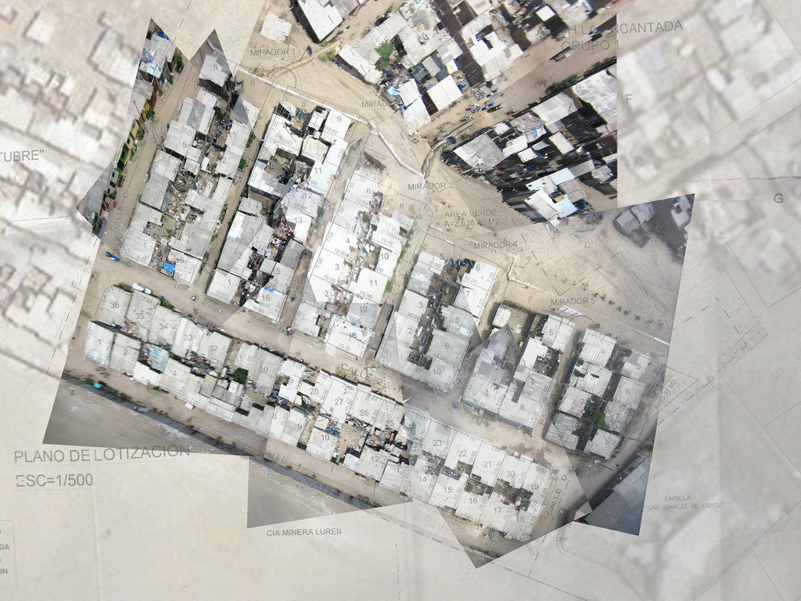

With Carla del Carpio, I began working with a second community called San Ignacio Loyola, approximately 1 mile southeast of Juan Pablo II. Our local partner was a teacher named Hector, who had a class of very young students, aged 5-10. Though we had limited success in mapping exercises with the class, Hector proved to be an ideal collaborator, and actively sought to internalize the skills needed to produce balloon maps, with the intention of teaching the techniques to his fall class of older students. While members of San Ignacio Loyola already have both title to their land and a completed survey of their plots, Hector saw the applicability of low-cost aerial mapping to informal settlements, and showed a lot of enthusiasm and energy in organizing flights with us despite his heavy workload as both a teacher and the community leader in charge of public works.
Hector experienced similar if more pronounced difficulty in using Photoshop to stitch maps, but the imagery we captured with him over two 3-hour flights was superior to that of our Juan Pablo II flights. This may have been due to more favorable local wind conditions or our greater experience, but the result was a highly detailed and largely complete aerial map of the San Ignacio Loyola settlement. It became clear to us that building alliances and friendships with interested and energetic local partners was key to successful mapping.
|

|